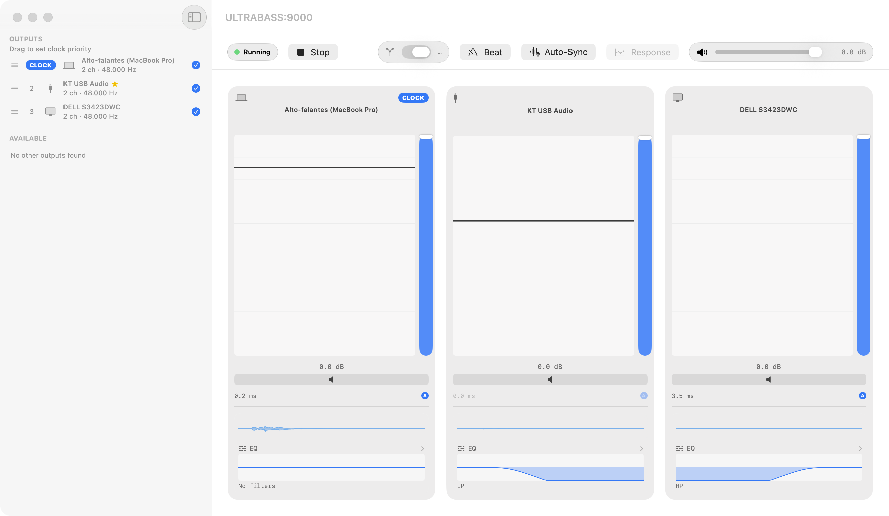
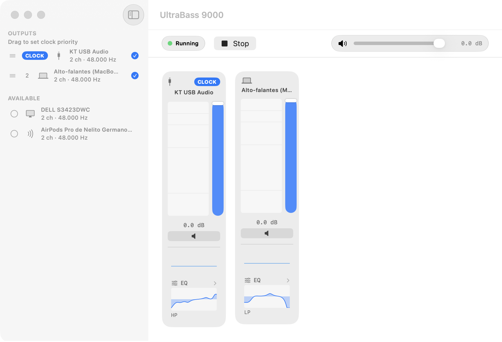

One Mac. Every output. Tuned independently.
UltraBass 9000 sends your system audio to as many devices as you choose, at the same time — each with its own volume, 5‑band EQ, filters, and delay. macOS's built-in Multi-Output Device can only send the identical signal to more than one output; it can't shape or align any of them per device. UltraBass 9000 does both, with no driver, no kernel extension, and no installer.
git clone https://github.com/nelitow/ultrabass9000.git
cd ultrabass9000
brew install xcodegen
xcodegen generate
open UltraBass9000.xcodeprojThen press ⌘R in Xcode to build, sign, and run it.
There's no downloadable build yet, and that's deliberate: macOS only grants the microphone permission this app needs to properly signed apps. An unsigned download would open normally and capture nothing — worse than not shipping one at all. Signed releases need an Apple Developer ID; until then, building it yourself is the way. Xcode signs the app with your own developer identity automatically, so permissions work exactly as they should.
Multi-output routing
Send system audio to any number of devices simultaneously. No driver, no kernel extension, no installer.
Per-device 5-band EQ
Three peak bands plus low and high shelf, per device, with a response curve you drag directly.
Per-device filters
High-pass, low-pass, and band-pass, per device, in series with the EQ.
Per-device delay
Hold faster devices back in time so audio from every output arrives together.
Acoustic auto-sync
Plays a sweep from each device in turn, listens back on the built-in microphone, and computes the alignment automatically. Measured repeatability on real hardware: ~0.2 ms.
AcousticCalibrator.swift:100 ↗Live waveform & metering
See what's actually playing on every output, per device, in real time.
Tap
UltraBass 9000 quietly copies the audio your Mac is already playing, right as it leaves each app, using a macOS process tap. Nothing is muted or interrupted — every app keeps playing normally.
ProcessTap.swift:28 ↗Route
That copy feeds a private aggregate device the app builds behind the scenes, wired to whichever outputs you've picked. It exists only while UltraBass 9000 is running.
Shape
Each output gets its own path — delay, then EQ, then filters — before the sound reaches that speaker, so every device can be tuned on purpose instead of playing an identical signal.
AggregateOutput.swift:207 ↗

Free, open source, macOS 26+
No binary yet — clone it, generate the Xcode project, and run it.